CS184/284A Summer 2025 Homework 2 Write-Up
Link to main webpage: https://cal-cs184.github.io/hw-webpages-su25-archisha1223/
Link to GitHub repository: https://github.com/cal-cs184/hw2-meshedit-square
Link to website repo: https://github.com/cal-cs184/hw-webpages-su25-archisha1223
Overview
In this assignment, I implemented a mesh editing system for geomtetric modeling using the half-edge mesh data structure. The early tasks focused on evaluating Bezier curves and surfaces using de Casteljau's algorithm. I also worked on half-edge operations to flip and split edges. The later tasks involved implementing a full loop subdivision algorithm. Loop subdivision depends heavily on correct splitting and flipping behavior. Altogether, the assignment demonstrated how low-level geometric operations can be orchestrated to perform high-level surface modeling. From this assignment, I gained a deeper understanding of mesh representation and processing.Section I: Bezier Curves and Surfaces
Part 1: Bezier curves with 1D de Casteljau subdivision
Bezier curves and surfaces are used to model smooth and infinitely scalable curves and surfaces. To evaluate Bezier curves, I implemented de Casteljau's algorithm using an iterative approach.Given n control points \( p_1, \ldots, p_n \) and the parameter \( t \), I used linear interpolation to compute the \( n - 1 \) intermediate control points at the parameter \( t \) in the next subdivision level, \( p_1', \ldots, p_{n-1}' \), where
\( p_i' = \text{lerp}(p_i, p_{i+1}, t) = (1 - t)p_i + tp_{i+1} \)
The next step uses the points from the previous step, and decreases the number of points by one each time. I repeated this process until eventually, one point remained. This is the point on the Bezier curve corresponding to the current \( t \) value. The path traced by this final point as \( t \) varies, defines the curve.
Below is a custom 6 control point Bezier curve highlighting each step of the implemented algorithm.
| 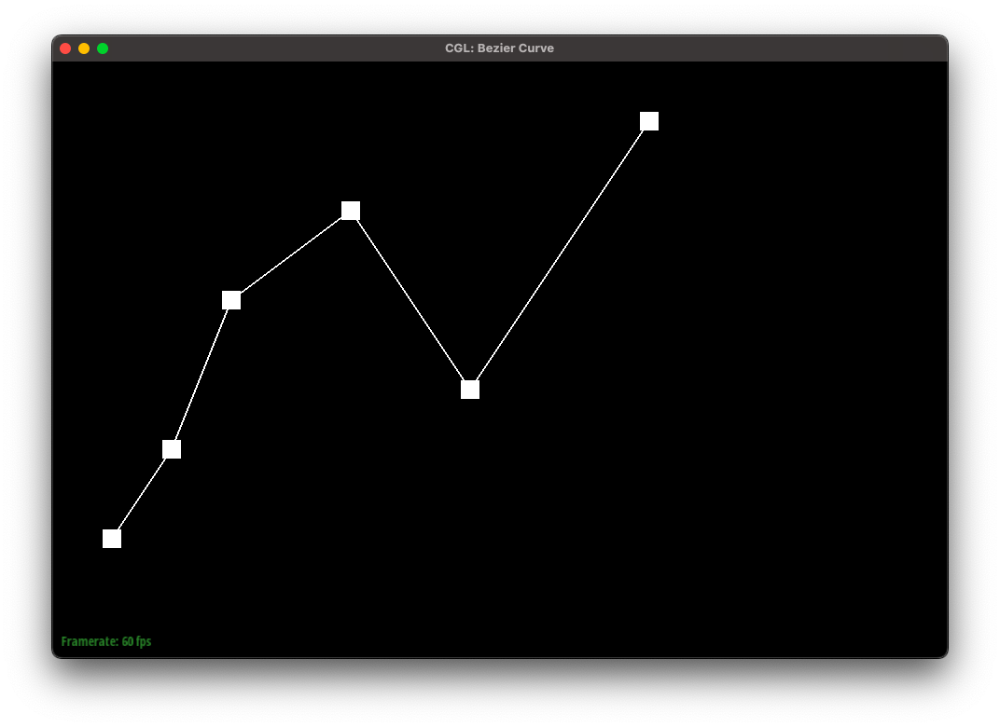 |
| 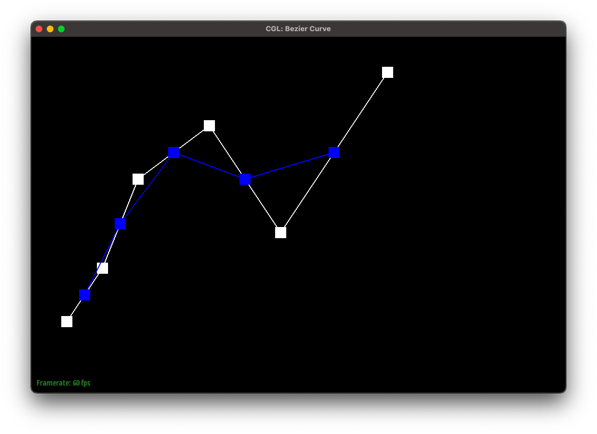 |
| 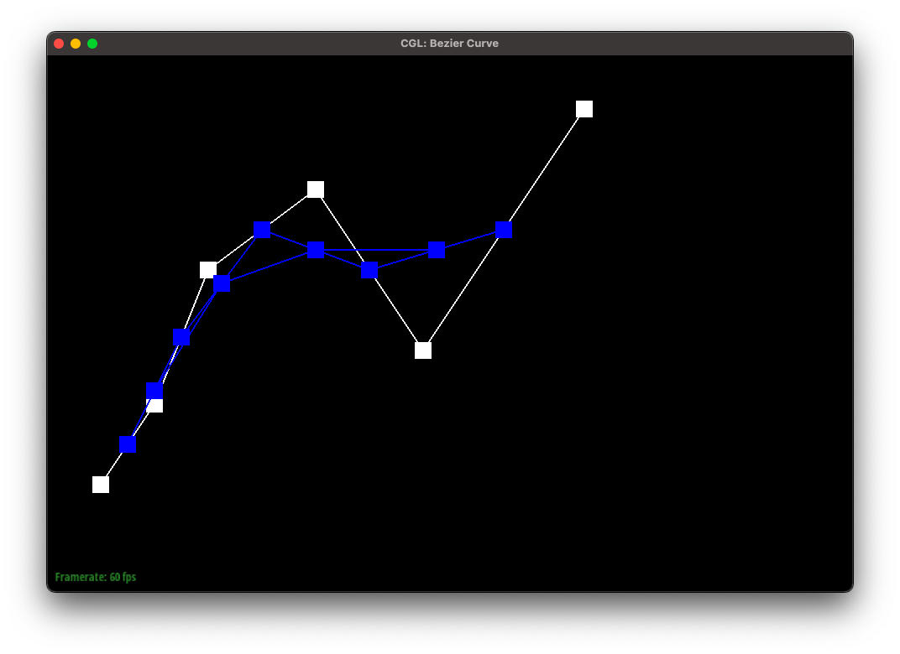 |
| 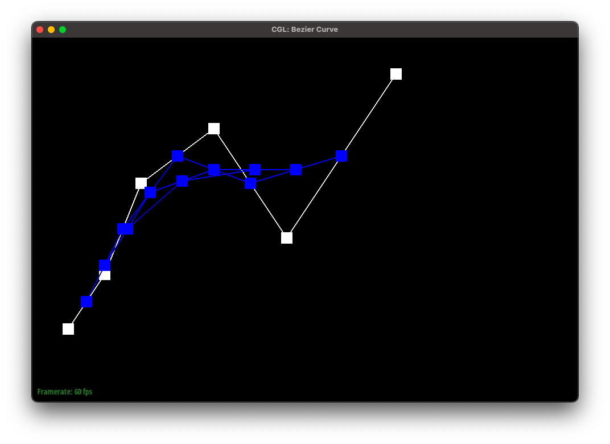 |

|
| 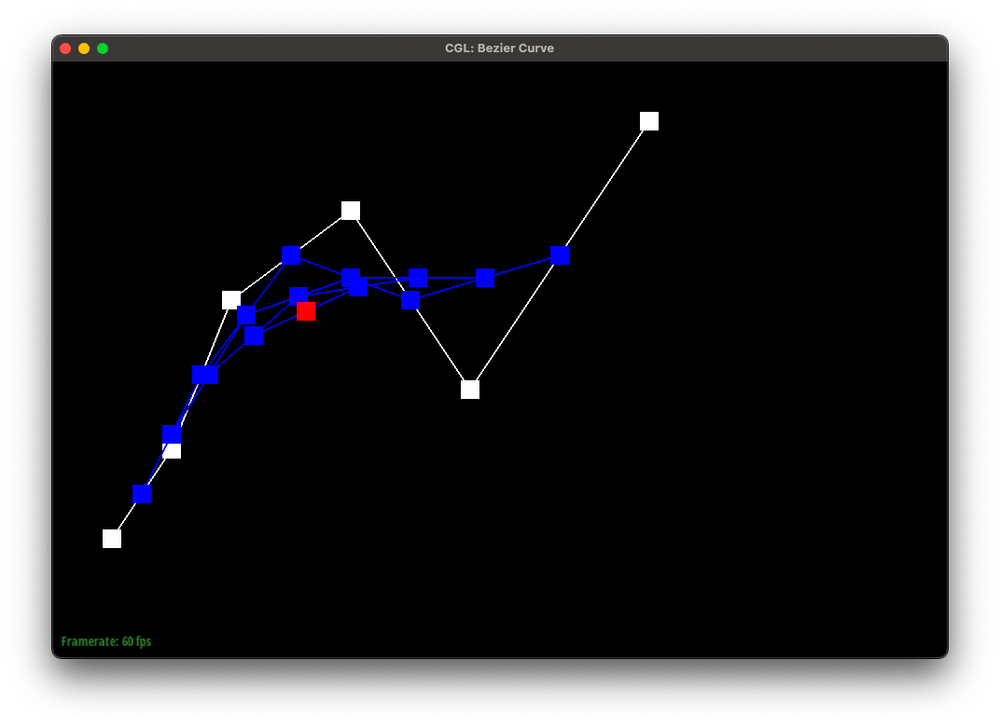 |
| 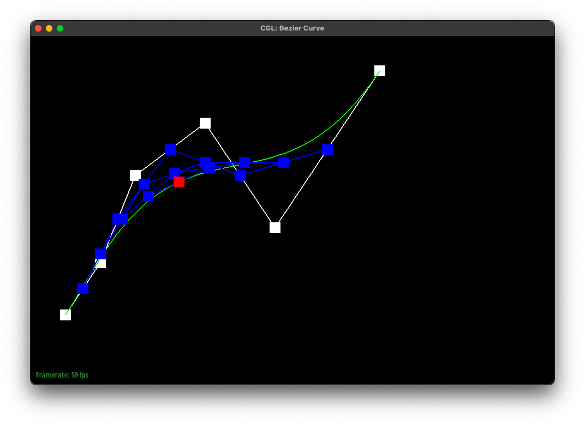 |
Below is a slightly different Bezier curve.
| 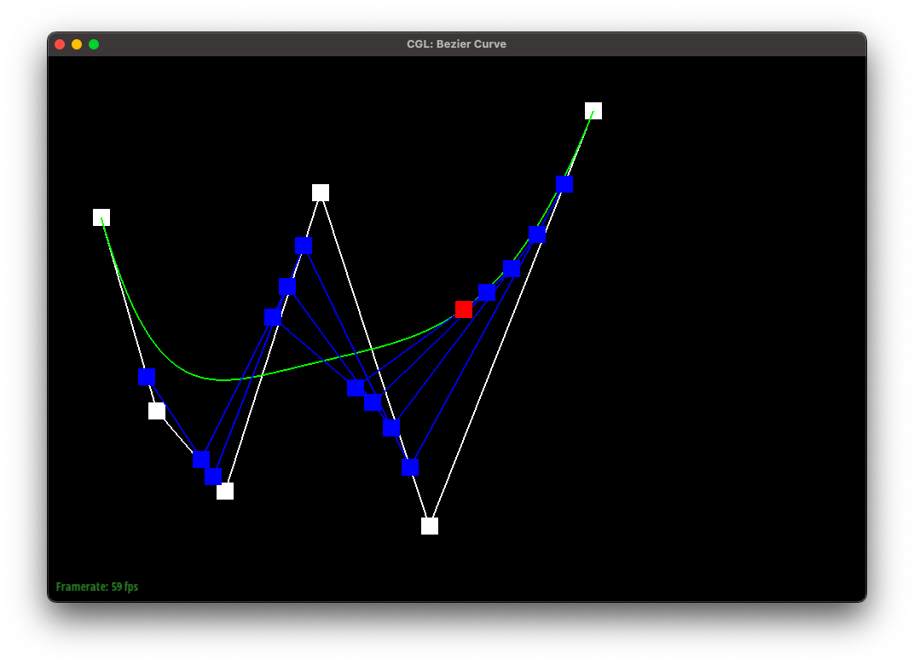 |
Part 2: Bezier surfaces with separable 1D de Casteljau
Here, I adapted my implementation from Bezier curves to Bezier surfaces. A Bezier surface is defined over a 2D grid of control points. The de Casteljau algorithm extends
to Bezier surfaces by performing linear interpolation in two stages: one along the rows in the u direction, and then along the resulting set of points across the v axis.
Given an N × N grid of 3D control points, I utilized evaluate1D twice. First, I evaluated each row using the u parameter and produced a list of intermediate points.
Then, I applied the same interpolation process along the v direction. The evaluate1D method repeatedly calls evaluateStep until a single point remains.
This final point represents the evaluated surface point at (u, v).
Below is an image of teapot.bez rendered using this implementation.
| 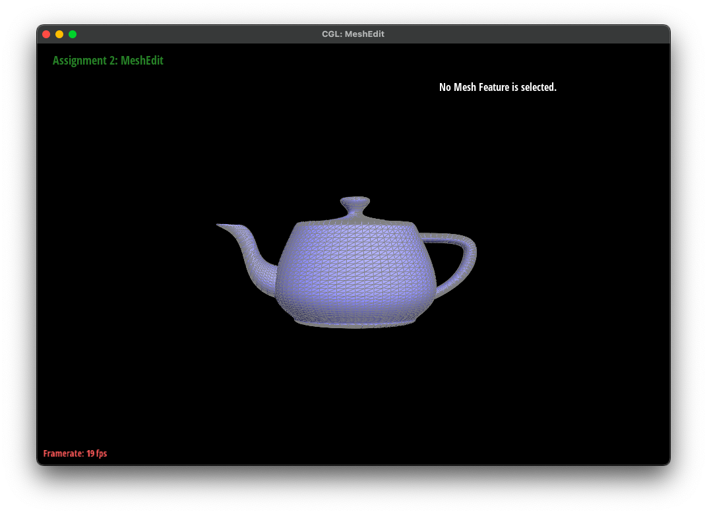 |
Section II: Triangle Meshes and Half-Edge Data Structure
Part 3: Area-weighted vertex normals
In this task, I computed vertex normals by averaging the normals of adjacent faces, weighted by area. This method allows for better shading for smooth surfaces rather than the default flat shading. I used the half-edge data structure to loop through all neighboring triangles of a given vertex. For each face, I retrieved its three vertex positions using half-edge traversal (by using h->next()->vertex() and h->next()->next()->vertex()). I computed the face normal using a cross product. Since the magnitude of the cross product corresponds to the triangle’s area, I summed these normals to find the area-weighted result. After the loop, I normalized the summed vector to get a unit vertex normal for smooth shading.Below is a comparison of teapot shading with and without vertex normals.
| 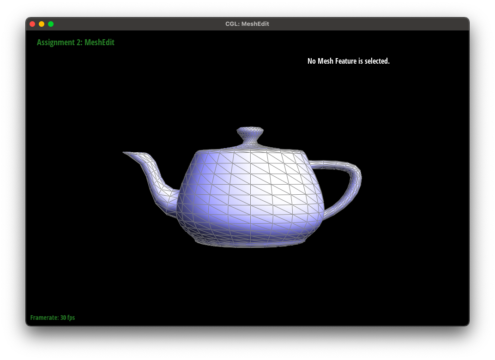 | 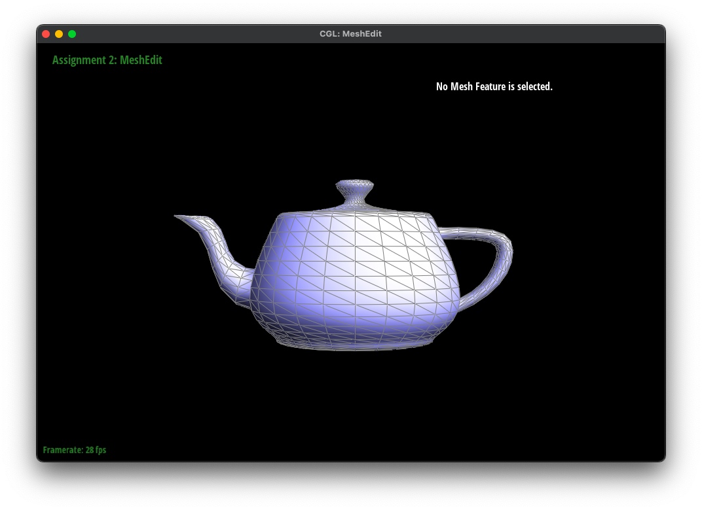 |
Part 4: Edge flip
In this task, I implemented a local remeshing operation to flip an edge. The goal of edge flipping is to rotate the shared edge of two adjacent triangles to connect the opposite pair of vertices, changing the local mesh connectivity but preserving the shape. To implement the edge flip operation, I began by checking if the input edge is a boundary edge, which cannot be flipped. If it is not, I proceeded to list all local references involved in the operation of two triangles which includes 10 half-edges, 4 verticies, 5 edges, and 2 faces.One key bug I encountered was black or disappearing faces after multiple edge flips, where I could successfully flip edges but upon flipping a consecutive edge, the face would disappear. I found that this was caused by incorrect face pointers and incorrect next relationships. Edge flipping is especially sensitive to the order in which pointers are updated. If even one pointer is wrong or missing, the shading will break. I fixed this bug by carefully drawing out the original and resulting triangle configurations and verifying each pointer assignment against the diagram. Another helpful debugging trick was using the GUI to flip an edge, then immediately hovering over each triangle to check which face and vertex pointers were wrong. This technique made it easier to narrow down incorrect relationships. By visually listing out the half-edges, verticies, edges, and faces, I was quickly able to follow the diagram and correct my implementation.
Below is the diagram I created for the implementation.
|
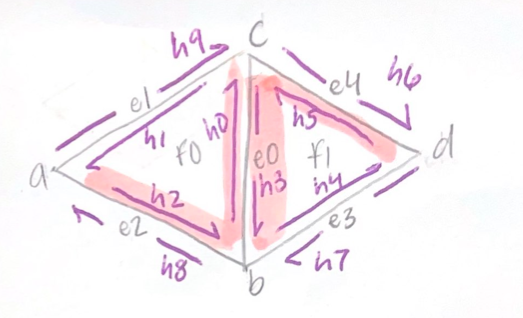
|
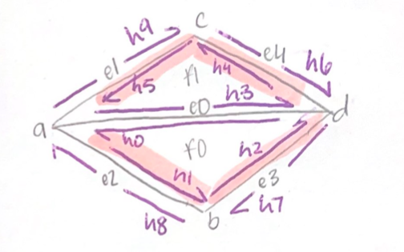
|
Here, we see the before and after of applying edge flips.
| 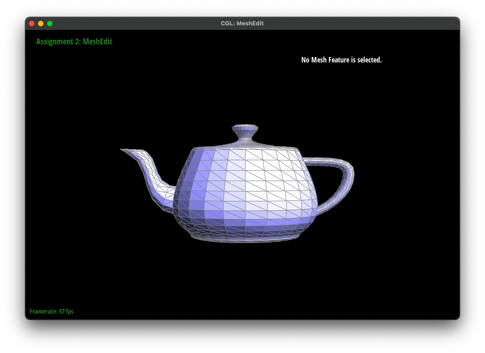 |
Part 5: Edge split
In this task, I implemented a local remeshing operation to flip an edge. The goal of splitting an edge is to split the two adjacent triangles into four smaller ones, connected by the new vertex placed at the midpoint of the edge. To implement the edge split operation, I created another diagram highlighting all the new pointers and utilizing the same "old" pointers from Part 4. The key difference here was adding a new midpoint vertex m, 6 new half-edges, and 2 new faces. I utilized the same logic as Part 4, and similarly setNeighbors in the counterclockwise direction. By spending time on creating an accurate diagram, I faced no challenges and did not have any difficult bugs in this task.Below is the diagram I created for the implementation.
|
|
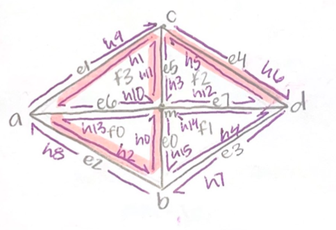
|
Below, we see the before and after of applying edge splits.

|
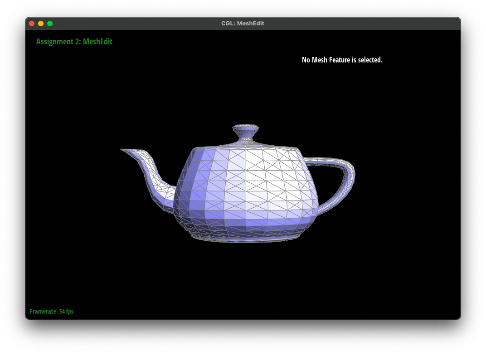 |
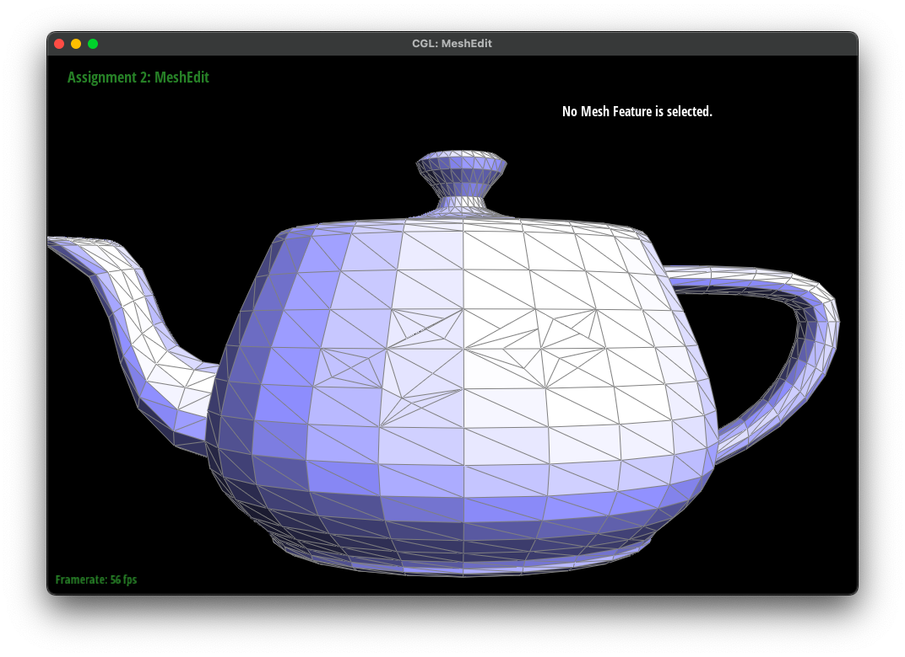
|
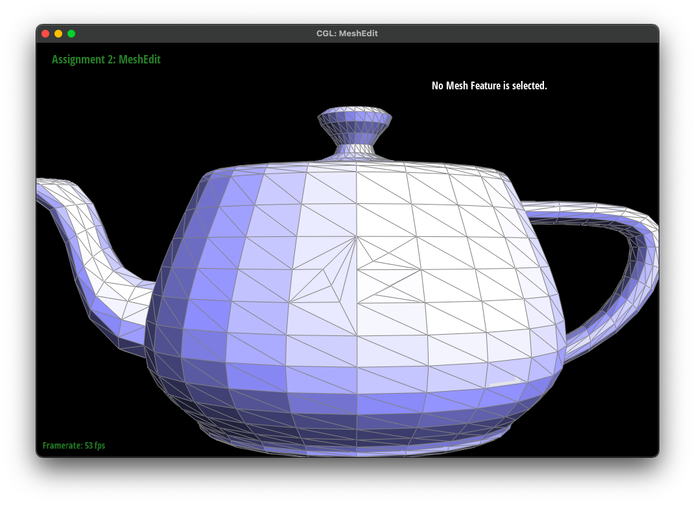
|
Part 6: Loop subdivision for mesh upsampling
In this task, I implemented a mesh upsampling method called loop subdivision. Loop subdivision upsamples a mesh by subdividing each of its triangles into four smaller triangles and then updating the vertices of subdivided mesh based on a weighting scheme. The output of this algorithm is that the mesh becomes rounder and more concentrated towards its center. To implement this, I used the 5 step process outlined in the spec:- 1. Compute new positions for all the vertices:
For each vertex, I traversed its neighbors using the half-edge structure and computed a weighted average of their positions.
I applied the Loop subdivision weighting formula using the number of neighbors
n, and assigned \( u = \frac{3}{16} \) when \( n = 3 \), and \( u = \frac{3}{8n} \) otherwise. I stored the new positions inVertex::newPositionand marked all original vertices withisNew = false. - 2. Compute the updated vertex position for edges:
For each edge, I identified the two endpoints and the two opposite vertices.
I then computed the new position using the weighted formula:
\[ \frac{3}{8}(a + b) + \frac{1}{8}(c + d) \]
and stored it inEdge::newPosition. All existing edges were marked withisNew = false. - 3. Split every edge:
I recorded a list of all edges in the original mesh before performing any splits. Then, for each of these edges, I called
splitEdge, assigned the storednewPositionto that midpoint vertex, and marked it as a newly created vertex where (isNew = true). - 4. Flip edges: After splitting, I iterated through all edges again and flipped any new edge that connects a new and old vertex. This allows the mesh to preserve smoothness and ensure a uniform subdivision pattern.
- 5. Update Final Positions:
I assigned the
newPositionfor each vertex in the mesh to update the finalized geometry.
One major bug I encountered was not initializing the isNew flags correctly in splitEdge. Specifically, I initially did not realize the
necessity to mark the newly created edges and vertex inside splitEdge with isNew = true. This caused the flipping logic in Step 4 to
behave incorrectly where corners and edges spiked out more. Once I fixed this, the subdivision pattern became consistent and smoothened the edges correctly.
Below, I implemented loop subdivision on a torus, and we can notice that the edges disappear and the figure becomes more rounded and concentrated towards its center.
| 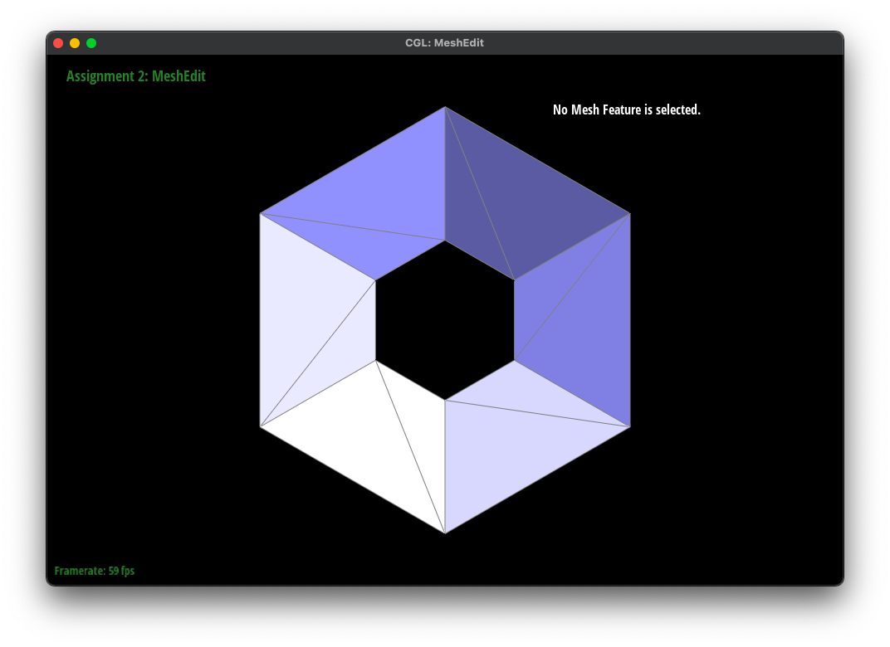 |
|
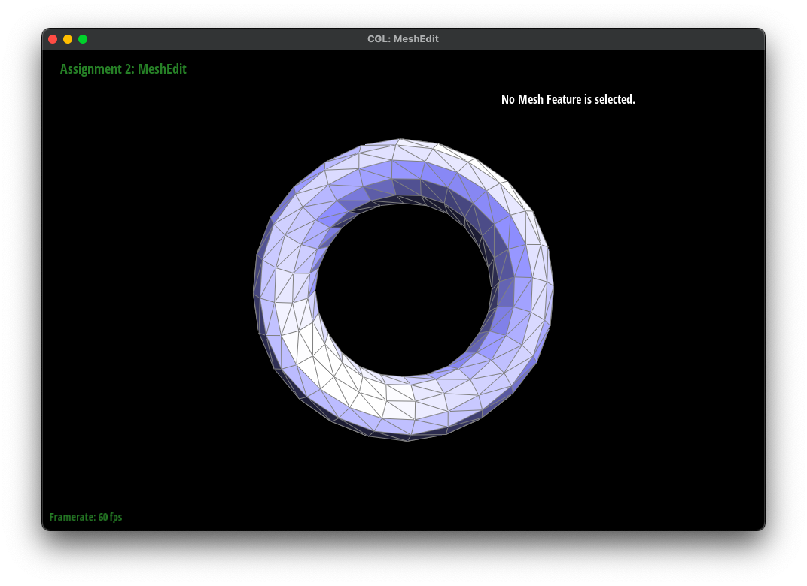 |
|
Below, I implemented loop subdivision on the standard cube.dae, and we can notice that the cube becomes slightly asymmetric after repeated subdivisions. This is due to the face of the cube having a diagonal edge in only one direction. Hence, uneven edge configurations yield inconsistent averaging weights, resulting in asymmetric renderings.
| 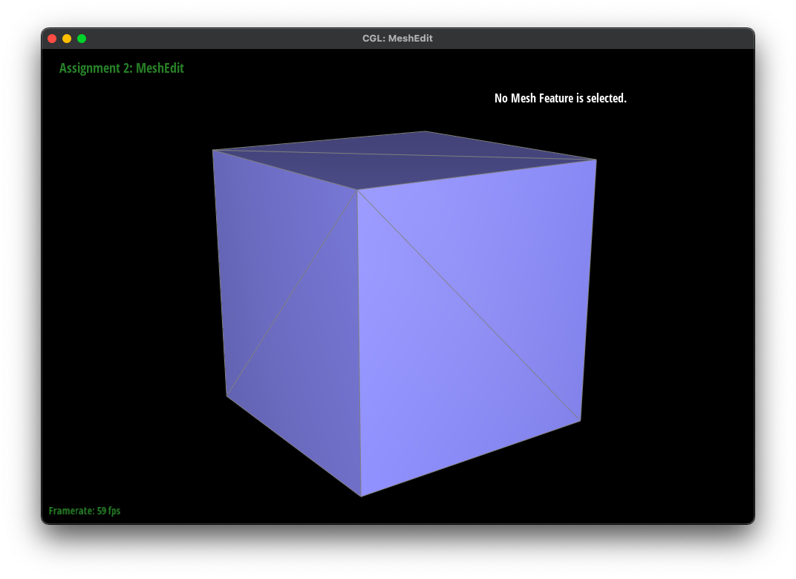 |
|
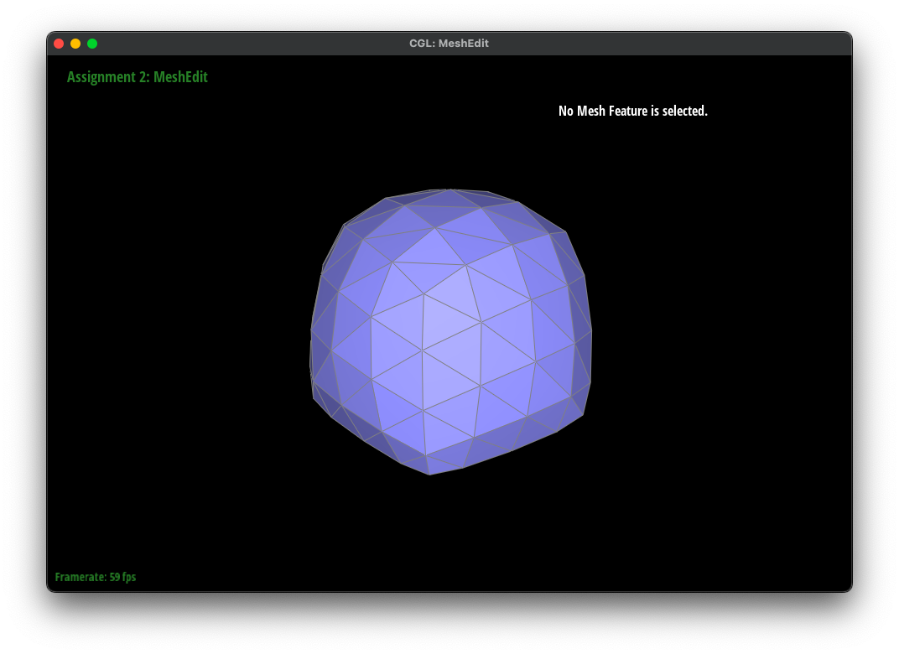 |
|
|
To fix this, we can pre-process the cube with edge flips and splits. These edits helped distribute connectivity more evenly across the mesh. As a result, the cube subdivided into a more symmetric sphere-like shape.
|
|
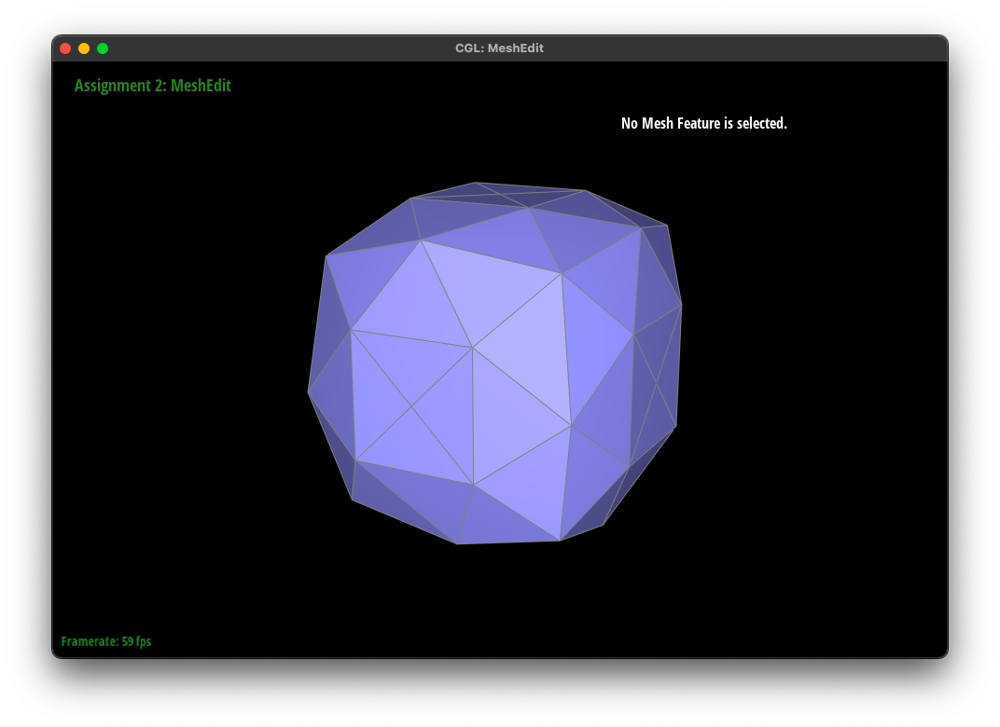 |
|
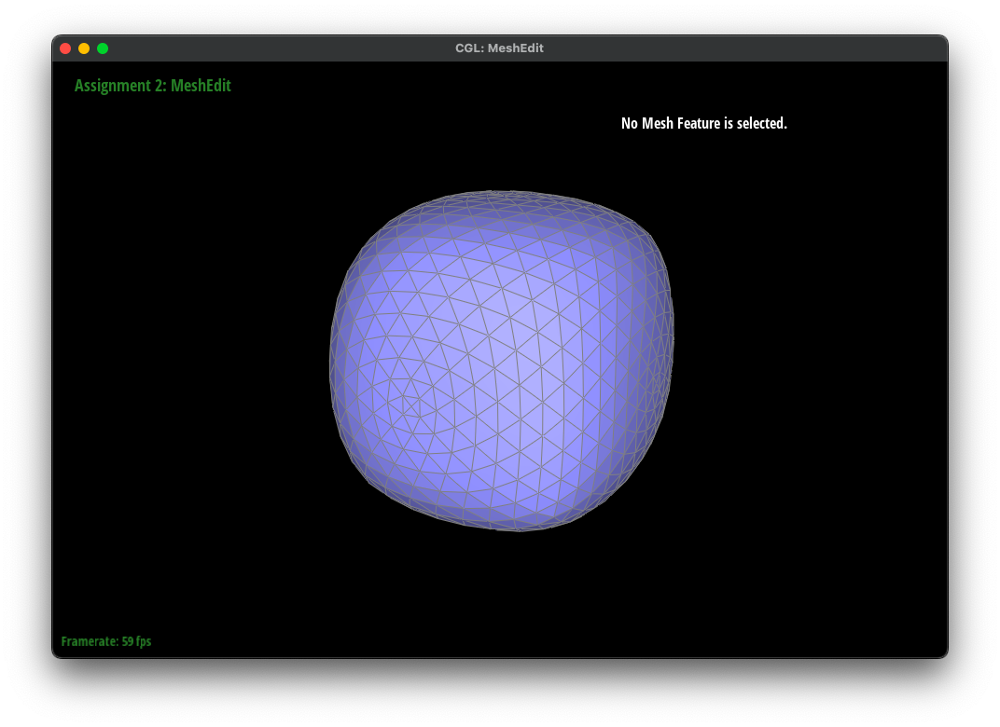 |
|